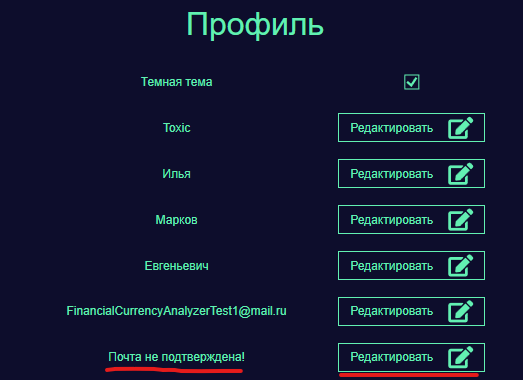

Если ваша почта не подтверждена перейти на вкладку -> "Аккаунт", там должен быть параметр "Почта не подтверждена".
Нажмите на кнопку "Редактировать". На вашу почту придет код подтверждения введите его в поле да ввода и нажмите на кнопку "Подтвердить".